| เมนู | ใช้ทำอะไร |
|---|---|
| สแกน | เลือกใบงาน แล้วสแกนสมุดส่งงาน / ให้คะแนน |
| สรุป | ดูว่าใครส่งแล้ว ใครยังไม่ส่ง · ตารางคะแนน |
| งาน | เพิ่มวิชา · สร้าง / แก้ไข / ลบใบงาน |
| นักเรียน | รายชื่อนักเรียน · พิมพ์ QR |
| ตั้งค่า | ลิงก์เปิดบนคอม · Google Sheet/Drive · คู่มือ |
ไปที่เมนู ตั้งค่า → ลิงก์เปิดบนคอม / iPad กด คัดลอก แล้วส่งลิงก์ไปเปิดใน Chrome หรือ Safari → เข้าสู่ระบบด้วยบัญชี LINE เดียวกับมือถือ (บนคอมสแกน QR เข้าสู่ระบบด้วยมือถือได้)
บนคอมหรือ iPad หน้าจอจะกว้างขึ้น เหมาะกับดูตารางคะแนน และใช้กล้องเว็บแคมสแกนได้เช่นกัน
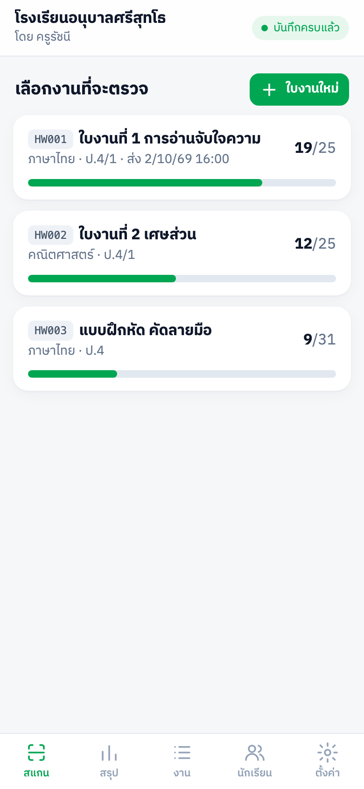
ไปที่เมนู นักเรียน เพิ่มได้ 2 วิธี
แก้ไข / ลบนักเรียน: แตะที่ชื่อนักเรียนในรายการ
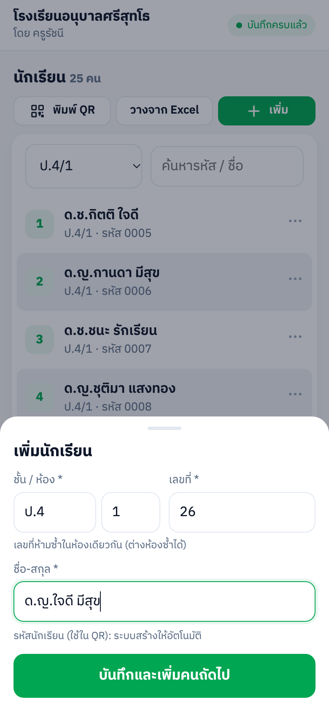
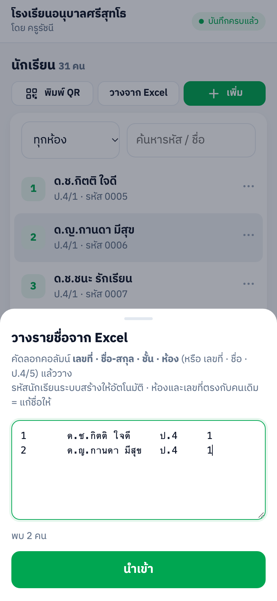
เมนู นักเรียน → พิมพ์ QR (หรือ ตั้งค่า → พิมพ์)
พิมพ์ครั้งเดียว ใช้ได้ทุกใบงาน ทุกวิชา ทั้งปี · แก้ชื่อหรือย้ายห้องก็ไม่ต้องพิมพ์ใหม่ · พิมพ์ใหม่เฉพาะนักเรียนใหม่หรือสติกเกอร์ชำรุด (QR เหมือนเดิม)
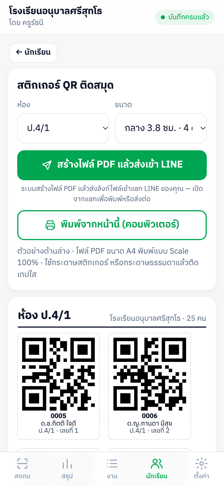
ลำดับคือ เพิ่มวิชาก่อน → สร้างใบงานในวิชานั้น · ทั้งหมดอยู่ที่เมนู งาน
ในรายการวิชา: ＋ ใบงาน สร้างใบงานในวิชานั้น · ✎ แก้ไข · 🗑 ลบ
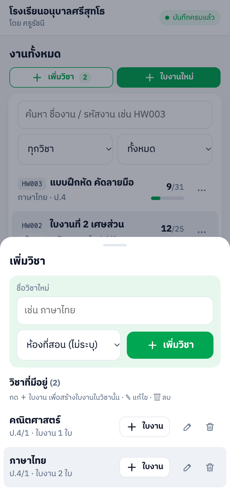
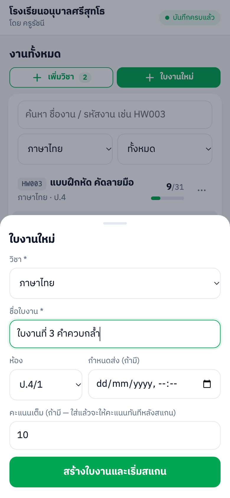
| เสียง | ความหมาย |
|---|---|
| ปี๊บ (เสียงสูง สั้น) | บันทึกการส่งแล้ว |
| ปี๊บ-ปี๊บ | ส่งแล้ว (สแกนซ้ำ) — ขึ้นป๊อปอัพแจ้ง |
| เสียงต่ำ | ไม่พบรหัส / ไม่ใช่ห้องที่สั่งงาน |
iPhone: แตะหน้าจอ 1 ครั้งก่อนเริ่มสแกน เพื่อให้เบราว์เซอร์อนุญาตให้มีเสียง
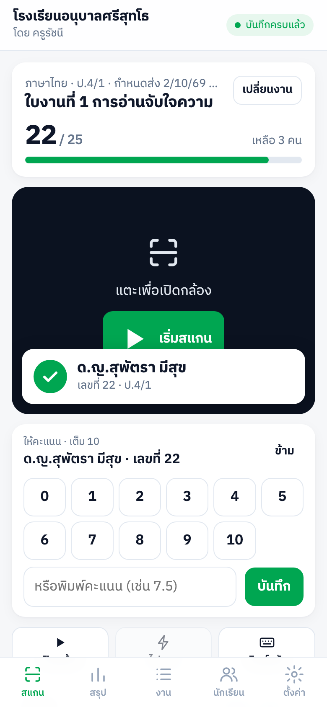
ถ้าสแกนสมุดที่ส่งแล้ว จะขึ้นป๊อปอัพ “ส่งแล้ว (สแกนซ้ำ)” พร้อมเวลาที่ส่งและคะแนน (ไม่เพิ่มในรายการล่าสุด) กด แก้คะแนน เพื่อแก้คะแนน หรือ ตกลง แล้วสแกนต่อ
ในรายการ ล่าสุด ใต้กล้อง กดปุ่ม ↶ หลังชื่อ แล้วยืนยัน — นักเรียนคนนั้นจะกลับเป็น “ยังไม่ส่ง”
แตะป้ายคะแนนในรายการล่าสุด เพื่อแก้คะแนนได้
กดปุ่ม ⌨ พิมพ์รหัส ใต้กล้อง แล้วพิมพ์รหัสนักเรียน ผลเหมือนการสแกนทุกอย่าง
กด เปิดใน Chrome / Safari (สแกนต่อเนื่องได้) หรือ ใช้ตัวสแกนของ LINE
สแกนต่อได้ตามปกติ ระบบเก็บไว้ในเครื่อง (มุมขวาบนขึ้น “รอบันทึก …”) แล้วส่งขึ้น Google ให้เองเมื่อกลับมาออนไลน์ แม้ปิดแอปแล้วเปิดใหม่ก็ไม่หาย · เมื่อขึ้น “บันทึกครบแล้ว” แปลว่าข้อมูลอยู่ใน Google Sheet แล้ว
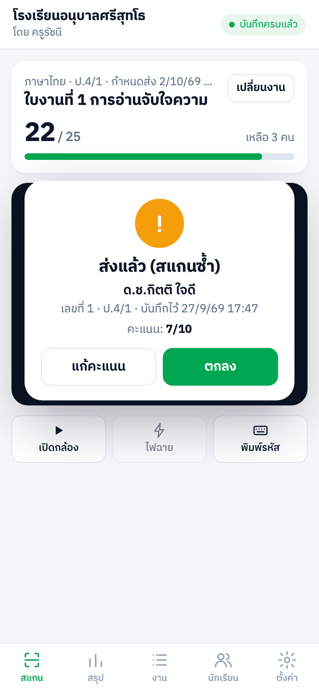
เมนู สรุป → แท็บ สรุปรายงาน → เลือกใบงาน
ในรายชื่อส่งแล้ว แตะ ป้ายคะแนน (หรือ “ให้คะแนน”) หลังชื่อนักเรียน แล้วเลือกคะแนน — ใช้ได้แม้ใบงานปิดรับแล้ว
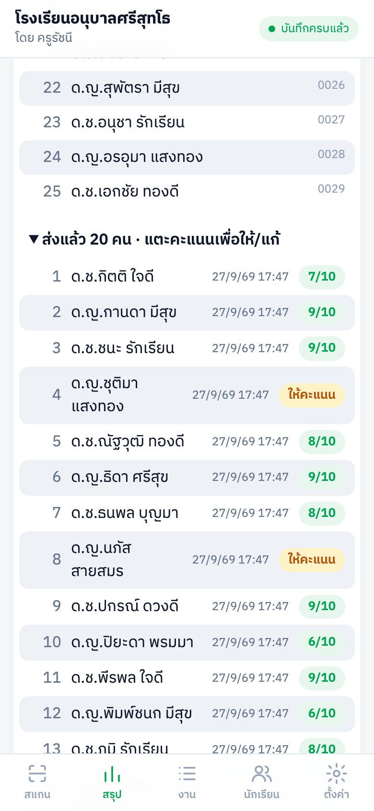
เมนู สรุป → แท็บ ตารางคะแนน (หรือเปิดลิงก์ “ตารางคะแนนทุกงาน” จากหน้าตั้งค่า)
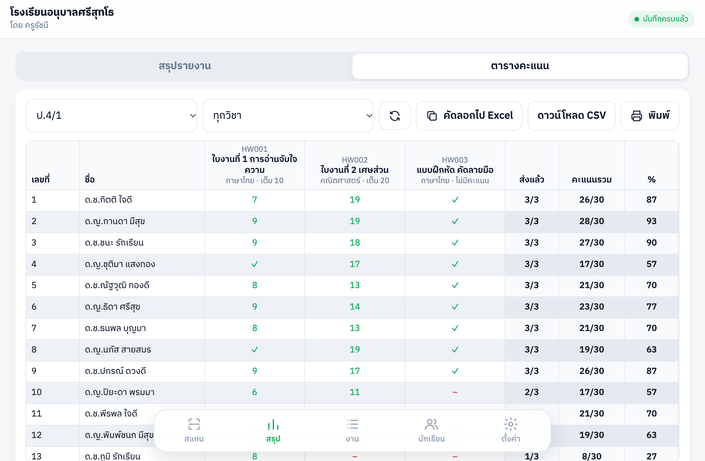
| ในตาราง | ความหมาย |
|---|---|
| ตัวเลข | คะแนนที่ได้ |
| ✓ | ส่งแล้ว ยังไม่ให้คะแนน (หรือใบงานไม่มีคะแนน) |
| – | ยังไม่ส่ง |
| • | ส่งช้า |
| · | ใบงานนี้ไม่ได้สั่งให้ห้องนี้ |
แตะใบงานในรายการ (หรือปุ่ม …) จะมีเมนู:
บนคอม / iPad มีปุ่ม ✎ แก้ไข และ 🗑 ลบ ในแต่ละแถว · ค้นหาใบงานได้จากชื่อ วิชา หรือรหัส และกรองตามวิชา / สถานะ
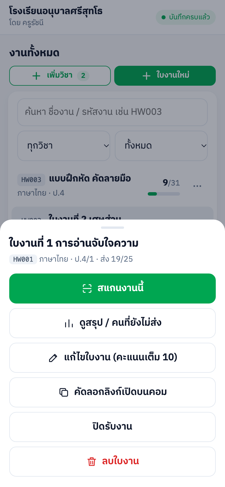
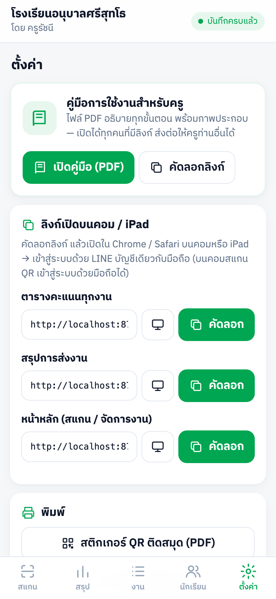
| อาการ / คำถาม | วิธีแก้ |
|---|---|
| สแกนแล้วขึ้น “ไม่พบรหัส” | ยังไม่มีนักเรียนคนนี้ในรายชื่อ — เพิ่มที่เมนู นักเรียน (ถ้าเพิ่งเพิ่มจากเครื่องอื่น ระบบจะโหลดรายชื่อใหม่ให้เอง ลองสแกนอีกครั้ง) |
| ขึ้น “ไม่ใช่ห้องที่สั่งงานนี้” | ใบงานนี้สั่งให้ห้องอื่น — แก้ห้องของใบงานที่ งาน → แก้ไขใบงาน |
| สแกนแล้วไม่มีปุ่มคะแนน | ใบงานยังไม่ตั้งคะแนนเต็ม — หลังสแกนจะถามคะแนนเต็ม (5/10/20/50/100) ตั้งครั้งเดียว หรือแก้ที่ แก้ไขใบงาน |
| มุมขวาบนขึ้น “รอบันทึก …” นาน | อินเทอร์เน็ตไม่เสถียร — ข้อมูลเก็บไว้ในเครื่องแล้ว ระบบส่งให้เองเมื่อออนไลน์ อย่าล้างข้อมูลแอป LINE จนกว่าจะขึ้น “บันทึกครบแล้ว” |
| กดยกเลิกแล้วขึ้น “กำลังบันทึก… รอสักครู่” | รายการนั้นกำลังส่งขึ้น Google — รอ 2–3 วินาทีแล้วกดยกเลิกอีกครั้ง |
| ไม่มีเสียงตอนสแกน | เปิดเสียงเครื่อง แล้วแตะหน้าจอ 1 ครั้งก่อนเริ่มสแกน |
| กล้องไม่เปิด | อนุญาตการใช้กล้องให้ LINE / เบราว์เซอร์ หรือกด เปิดใน Chrome / Safari · หรือใช้ พิมพ์รหัส |
| เปิดแล้วขึ้น “เข้าสู่ระบบ LINE ไม่สำเร็จ” | ปิดหน้าแล้วเปิดใหม่จากเมนูใน LINE |
| เลขที่ซ้ำ บันทึกไม่ได้ | ห้องเดียวกันใช้เลขที่ซ้ำไม่ได้ — ตรวจสอบเลขที่ของนักเรียนอีกคนในห้องนั้น |
| ลบวิชาไม่ได้ | วิชายังมีใบงาน — กด ดูใบงานของวิชานี้ แล้วลบใบงานก่อน |
| ต้องพิมพ์ QR ใหม่ไหม เมื่อสร้างใบงานใหม่ | ไม่ต้อง QR ผูกกับตัวนักเรียน ใช้ได้ทุกใบงาน |
| อยากให้ครูอีกท่านใช้ระบบ | ให้ครูท่านนั้นเพิ่มเพื่อน LINE OA แล้วส่งคำขอใช้งาน ผู้ดูแลระบบจะสร้างบัญชีให้ (ข้อมูลแยกกัน) |